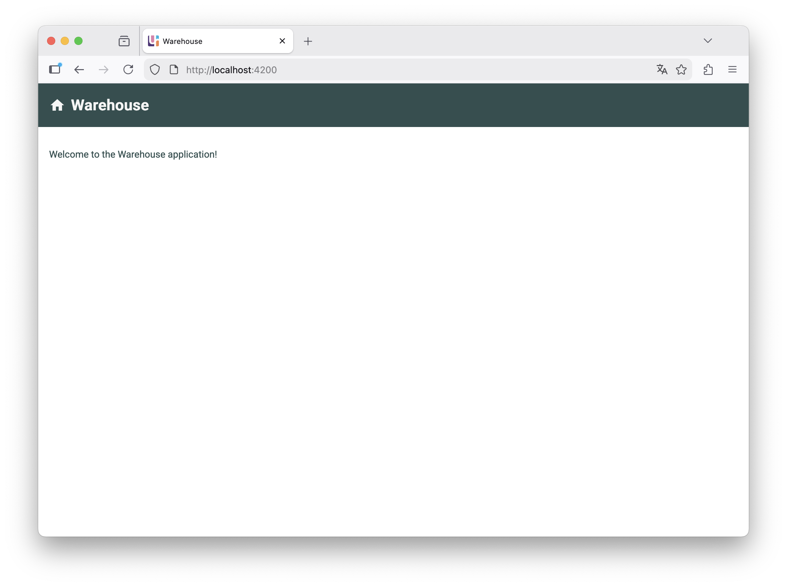
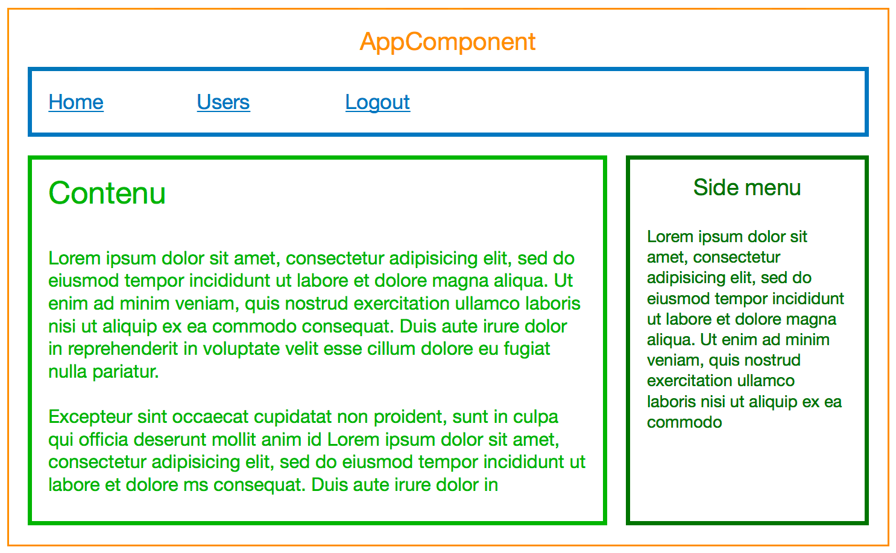
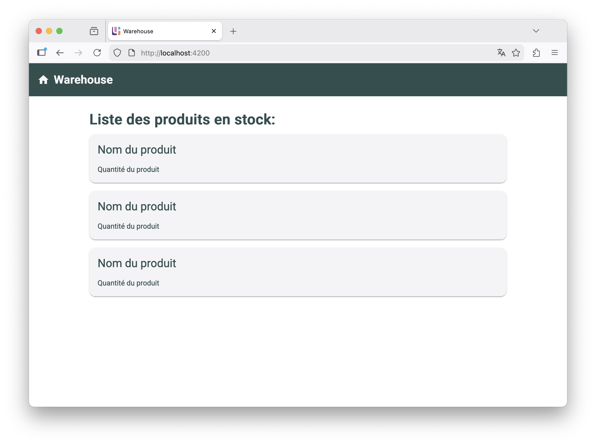
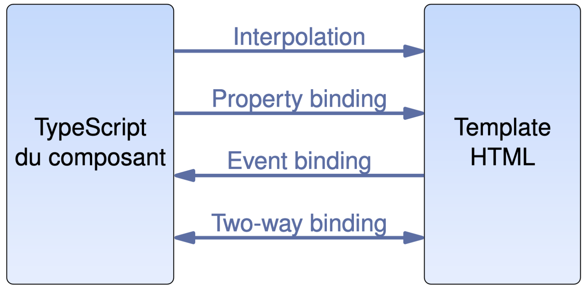
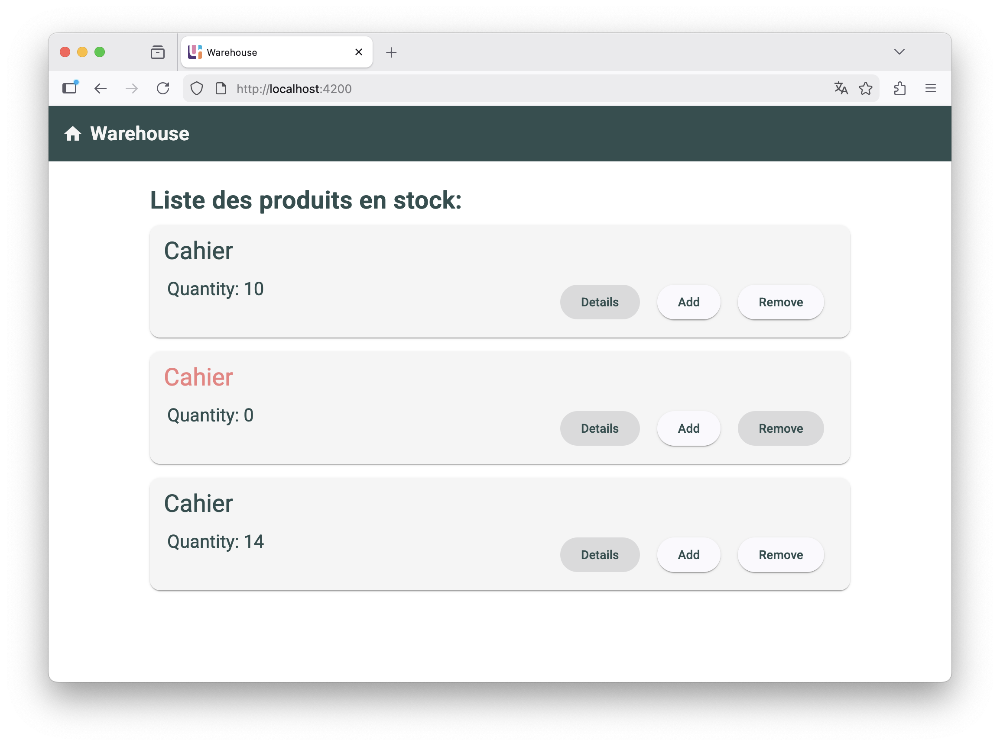
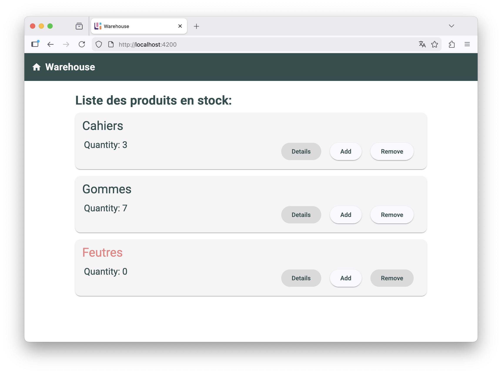
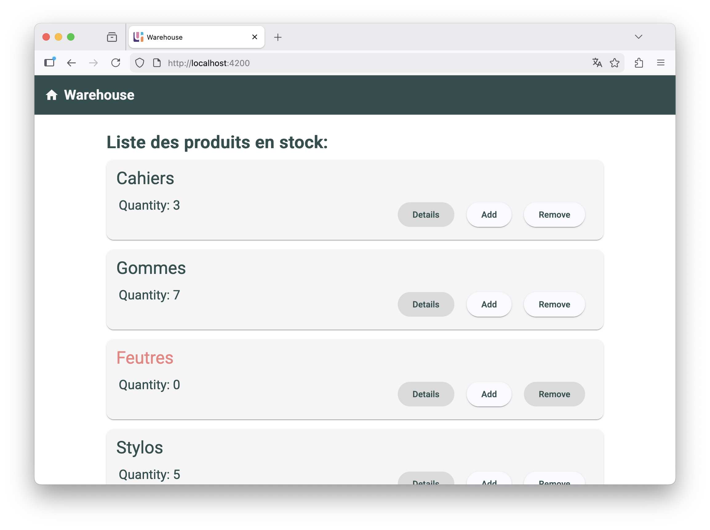
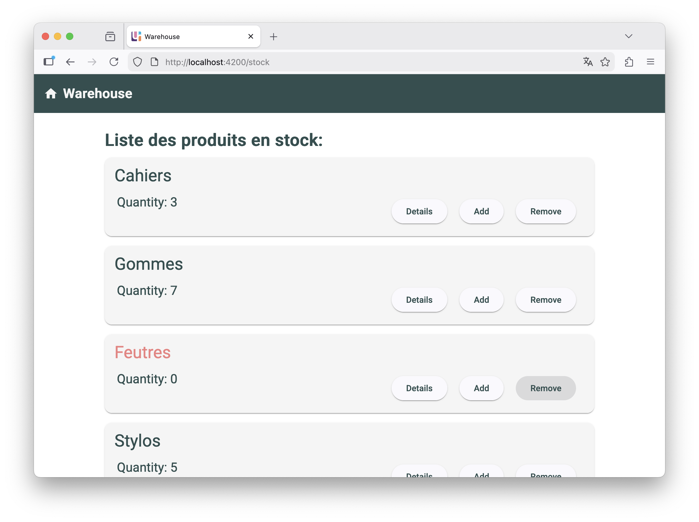
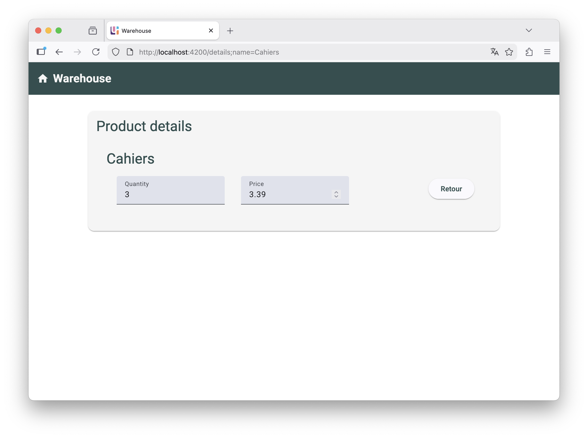

Web Dynamique côté Client
Angular
Dans ce chapitre
- Les objets en JavaScript
- La programmation orientée objet
- Objets standards
- Angular
- TypeScript
- Environnement Angular
- Composants et modules
- Liaisons de données
- Services et injection de dépendances
- Directives
- Navigation
- AJAX
Angular
- Framework web pour la création d'application côté client
- Single-Page Application (SPA) : une page web unique pour toute l’application
- TypeScript : superset de JavaScript
- Node.js : environnement pour le développement et le déploiement
- Angular CLI : outil en ligne de commande pour créer et gérer les projets
- Résultat final : une application web HTML/CSS/JS qui tourne dans un navigateur
Angular
Historique
- 2010 : AngularJS - première version par Google en JS
Objectif : créer des app ”client riche” en découplant le front de la logique metier - 2012 : AngularJS v1.0.0 - première v1 avec syntaxe JS très complexe
- 2016 : Angular 2.0 - v2.0 de AngularJS mais réécrite entièrement en TS.
Changement de nom pour éviter les confusions - 2017-2020 : Angular 4 à 11 - 2 versions par an (mai et nov.), toutes mises à jour pendant 18 mois.
- 2021 : Fin de AngularJS - Google arrête le développement et le support
- 2023 : Angular 17 introduit de nombreuses nouveautés pour simplifier le dev (control flow, signals, etc.)
- 2025 : Angular 20 et 21
TypeScript
- Superset de JavaScript développé par Microsoft
- Ajoute des fonctionnalités avancées à JavaScript :
- Typage statique (types explicites)
- Classes abstraites et interfaces
- Modules et espaces de noms
- Annotations
- Génériques
- Compilé (transpilé) en JavaScript standard pour être exécuté dans les navigateurs
- Améliore la maintenabilité et la robustesse du code
TypeScript
Système de typage
- Les variables ont un type fixe
- Pendant la compilation en JS, les types sont vérifiés pour détecter les incompatibilités
- Possibilité de spécifier des types explicites pour les variables, fonctions, etc.
let helloWorld = "Hello World";
// ou
let helloWorld : string = "Hello World";
helloWorld = 42; // Erreur de compilation : Type 'number' is not assignable to type 'string'
class User {
name: string;
id: number;
constructor(name: string, id: number) {
this.name = name;
this.id = id;
}
}
TypeScript
Système de typage
- Si le type n'est pas spécifié, TS le déduit à l'initialisation
let count = 10;
console.log(typeof count); // "number"
count = "ten"; // Erreur de compilation : Type 'string' is not assignable to type 'number'
anyany désactive la vérification de type
let data: any;
data = 42; // ok
data = "Hello World"; // ok
data = { name: "Alice" } // ok
let obj: any = { width: 10, height: 15 };
const area = obj.width * obj.heigth; // ok à la compilation
console.log(area); // NaN car 'heigth' est undefined
unknown qui est le type "sûr" pour les valeurs inconnuesTypeScript
Système de typage
- Pour les objets, TS utilise un système de typage structurel (duck typing)
- 2 objets sont du même type s'ils ont les mêmes propriétés, indépendamment de leur origine
const obj = { width: 10, height: 15 };
const area = obj.width * obj.heigth;
// Erreur de compilation: Property 'heigth' does not exist on type '{ width: number; height: number; }'.
// Did you mean 'height'?
class Person {
name: string;
constructor(name: string) { this.name = name; }
}
class User {
name: String;
constructor(name: string) { this.name = name; }
}
let user: User = new Person("John"); // ok: les 2 classes ont la même structure
TypeScript
Système de typage
- Pour définir un type d'objets de façon explicite: interfaces
- Une interface définit un contrat que les objets doivent respecter
interface User {
name: string;
id: number;
}
const user1: User = { name: "Alice", id: 1 };
const user2: User = { name: "Bob" }; // Erreur de compilation: Property 'id' is missing in
//type '{ name: string; }' but required in type 'User'.
class UserAccount {
name: string;
id: number;
constructor(name: string, id: number) {
this.name = name;
this.id = id;
}
}
const user: User = new UserAccount("Murphy", 1); // ok
TypeScript
Types Union
- TS autorise aussi la réunion de plusieurs types pour une même variable
- Cette variable peut recevoir des valeurs de chacun des types concernés
- La vérification du type est faite en contexte (e.g. ci-dessous, TS tiens compte du
ifdansprintId)
let value: string | number;
value = "Hello"; // ok
value = 42; // ok
value = true; // Erreur de compilation: Type 'boolean' is not assignable to type 'string | number'.
function printId(id: number | string) {
if (typeof id === "string") {
console.log(id.toUpperCase()); // ne fonctionne pas sans le "if" car id peut être un number
} else {
console.log(id);
}
}
TypeScript
Les classes
- TS est également plus strict sur la définition des classes
- Les propriétés doivent être initialisées (sinon erreur)
class User {
name: string;
constructor(name: string) { this.name = name; }
}
// ou
class User {
name: string = "Default Name";
}
! : indique que la propriété sera initialisée plus tard
class User {
name!: string;
setName(name: string) { this.name = name; }
}
TypeScript
Les classes
- Mots-clés
public,private,protected
class MaClasseDeBase {
private _firstname;
private _lastname;
public constructor(firstname: string, lastname: string) {
this._firstname = firstname;
this._lastname = lastname;
}
protected direBonjour(): string {
return "Bonjour " + this._firstname + "," + this._lastname;
}
}
class MaClasse extends MaClasseDeBase {
public constructor(firstname: string, lastname: string) {
super(firstname, lastname);
}
}
let monInstance: MaClasseDeBase = new MaClasse("Jean","Dupond");
monInstance.direBonjour(); // Erreur :
// Property 'direBonjour' is protected and only accessible within class 'MaClasseDeBase' and its subclasses.
TypeScript
Modules
- En JS, les fichiers d'extension
.jssont des scripts, i.e. exécutés dans le contexte global - Plusieurs scripts dans une même page HTML partagent les mêmes variables et fonctions globales
<html>
<head>
<script src="script1.js"></script>
<script src="script2.js"></script>
</head>
<body>...</body>
</html>
.js ou .ts qui utilise les mots-clés import et exportTypeScript
Modules
- Les modules existent en JS depuis 2015 et sont pris en charge par tous les navigateurs depuis 2020
- Les modules existent en TS depuis plus longtemps mais fonctionnent maintenant de la même manière
// -- shape.ts --
export interface Shape {
area(): number;
}
// -- circle.ts --
import { Shape } from "./shape";
export class Circle implements Shape {
radius: number;
constructor(radius: number) { this.radius = radius; }
area(): number { return Math.PI * this.radius * this.radius; }
}
// -- main.ts --
import { Circle } from "./circle";
let myCircle = new Circle(10);
console.log("Area: " + myCircle.area());
TypeScript
Documentation
Première application Angular
- Angular est un framework pour créer des applications web côté client
- Une application Angular ne s'exécute pas directement dans le navigateur
- Elle doit être "construite" (build) et traduite en JS, avant de pouvoir être exécutée
- Nécessite un environnement de développement spécifique:
Node.js: environnement d'exécution JS. Pour Angular, fournit des outils de développement.NPM: gestionnaire de paquets pour Node.js. Pour Angular, gestionnaires de dépendances.Angular CLI: outil en ligne de commande pour créer et gérer les projets Angular
Première application Angular
- Installer Node.js et NPM (instructions)
- Installer Angular CLI via NPM :
- Créer un nouveau projet Angular avec Angular CLI :
- Tester l'application :
> npm install -g @angular/cli
> ng new mon-projet
> cd mon-projet
> ng serve
http://localhost:4200/
Première application Angular
- La commande
servepermet de lancer le serveur de développement Angular - Pour le déploiement:
> ng build
dist contenant les fichiers de l'application Angular prêts à être déployés
> ng add @angular/material
Première application Angular
Démonstration: le projet Warehouse

Composants
- Une application Angular est constitué de composants
- Chaque composant définit une partie de l'interface utilisateur et son comportement

Composants
- Un composant Angular est défini par une classe TS avec un décorateur
@Component
import { Component } from '@angular/core';
@Component({
selector: 'app-stock',
template: `
Liste des produits en stock:
Les produits seront affichés ici.
`,
style: `
h1 { color: blue; }
`
})
export class Stock {
// Le code de cette classe définit le comportement du composant
}
@Component définit les métadonnées du composant :selector: nom de la balise HTML pour utiliser le composanttemplate: code HTML du composantstyle: styles CSS spécifiques au composant
Composants
- Ce composant est invoqué dans une page HTML avec :
<app-stock></app-stock>
<div class="stock-container">
<h1>Liste des produits en stock:</h1>
<p>Les produits seront affichés ici.</p>
</div>
Composants
- À sa création avec la commande
ng new, un projet comprend: - Un composant racine nommé
app - Un fichier
main.tsqui est le point d’entrée de l’application - Un fichier
index.html, la page HTML qui héberge l'interface - Un fichier
styles.csspour les styles globaux index.htmlcomprend une balise<app-root>, correspondant au composant racine
<html lang="en">
<head>
...
</head>
<body>
<app-root></app-root>
</body>
</html>
Composants
- Chaque composant est typiquement défini par 3 fichiers:
nom-composant.ts: code TypeScript du composantnom-composant.html: template HTML du composantnom-composant.css: styles CSS spécifiques au composant- Dans ce cas, le décorateur de la classe TS devient:
@Component({
selector: "app-stock",
templateUrl: './stock.html',
styleUrl: './stock.css',
})
export class Stock { ... }
.component.ts, .component.html et .component.css.Composants
- Pour créer un nouveau composant:
> ng generate component component-path/component-name
component-path est le chemin où sera créé le composant, dans src/appcomponent-name est le nom qui servira à nommer la classe TS et les fichiers correspondant- Inclure sa balise dans le template HTML du composant racine ou d'un autre composant
- Importer le module du composant dans la classe TS du composant qui l'inclut
Composants
Démonstration: création de composants

Liaison de données
- Le template d'un composant définit son rendu dans la page
- HTML "augmenté", c’est-à-dire avec des éléments de syntaxe dynamique
- Par exemple :
<!-- fichier hello.html -->
<h1>Hello {{name}}</h1>
<button (click)="changeName()">Change Name</button>
{{name}} et changeName() sont des variables et méthodes de la classe TS du composant:
@Component({
selector: "hello",
templateUrl: './hello.html',
styleUrl: './hello.css',
})
export class Hello {
name: string = "World";
changeName(): void {
this.name = "Angular";
}
}
Liaison de données
- Les éléments dynamiques du template (e.g.
{{name}},(click)) établissent des liens d’intéraction entre le composant et son template : liaison de données ou data binding - Il y a 4 types de liaison de données :
- interpolation :
{{variable}}(TS vers HTML) - property binding :
[property]="value"(TS vers HTML) - event binding :
(event)="handler()"(HTML vers TS) - two-way binding :
[(ngModel)]="value"(bidirectionnel)

Liaison de données
Interpolation
- Composant
productdans le projetWarehouse
export class Product {
product: ProductInfo = {
name: "Cahier",
quantity: 3
}
...
}
ProductInfo est une interface à définir dans le projet (e.g. ng generate interface data/product)
<h2>{{product.name}}</h2>
<p>Quantity: {{product.quantity}}</p>
{{product.name}} et {{product.quantity}} sont remplacés par les valeurs correspondantes de l’objet product du composantLiaison de données
Event binding
- Des méthodes du composants peuvent être utilisées comme gestionnaires d'événements
- Exemple: dans le composant
Product, méthodes pour gérer la quantité du produit:
export class ProductComponent {
...
onRemove(): void {
if (this.product.quantity > 0) {
this.product.quantity--;
}
}
}
(click)
<button (click)="onRemove()">Remove</button>
event dans le gestionnaire (cf. documentation)Liaison de données
Property binding
- Pour définir la valeur d'un attribut de balise à partir d'une propriété de composant
- Exemple: bouton "remove" désactivé si le produit n'est plus disponible
<button (click)="onRemove()" [disabled]="product.quantity === 0">Remove</button>
class et style (cf. documentation)
<h2 [class.soldout]="product.quantity<=0">{{ product.name }}</h2>
<h2 [class]="setTitleClasses()">{{ product.name }}</h2>
setTitleClasses() retourne une chaîne de caractères contenant les classes CSS à appliquerLiaison de données
Two-way binding
- Combinaison de property binding et event binding
- Liaison bidirectionnelle (lecture/écriture)
- Exemple: la quantité d'un produit est modifiable via un
<input>
<label for="quantity-input">Quantity:</label>
<input type="number" [(ngModel)]="product.quantity" id="quantity-input">
product.quantity est mise à jour automatiquementproduct.quantity est modifié, le champ HTML est mis à jour automatiquement[(ngModel)] nécessite d'importer le module FormsModuleLiaison de données
Démonstration : composant Product

Services
- Un service Angular est une classe TS qui n'est pas lié à un template
- Sert à exposer des fonctionnalités réutilisables à plusieurs autres composants ou services
- Typiquement:
- Un composant sert d'intermédiaire entre la vue et la logique d'application
- Un service fournit une fonctionnalité précise qui n'implique ni la vue, ni la logique d'application
- On peut générer un service avec:
> ng generate service service-path/service-name
Services
- Exemple: un service
StockServicequi fournit une liste de produit en stock
import { ProductInfo } from '../data/product';
export class StockService {
private _products: ProductInfo[] = [
{name : "Cahiers", quantity : 3},
{name : "Gommes", quantity : 7},
{name : "Feutres", quantity : 0}
];
public get products(): ReadonlyArray<ProductInfo> {
return this._products;
}
}
_products est privé mais accessible en lecture via le getter productsReadonlyArray est un type TypeScript qui garantit que l'array ne peut pas être modifiéServices
Injection de dépendances
- Pour qu'un service soit utilisable dans un composant, ce dernier doit disposer d'un objet de ce service
- Nous (développeurs) ne créons pas nous même les composants et les services
- Angular se charge de créer l'objet et de le fournir au composant: Injection de dépendances
- Il faut déclarer le service comme étant "injectable":
import { Injectable } from "@angular/core";
@Injectable({
providedIn: "root"
})
export class StockService { ... }
providedIn: "root" indique à Angular qu'il doit:- Créer une seule instance de ce service (singleton)
- Rendre cette instance accessible à tous les composants de l'application
Services
Injection de dépendances
- Il faut ensuite "injecter" le service dans le composant:
- Exemple: création d'un composant pour afficher les produits en stock
import { inject } from "@angular/core";
import { Product } from '../../data/product';
import { StockService } from "../../services/stock-service";
export class Stock {
products: ReadonlyArray<Product> = [];
private stockService: StockService = inject(StockService);
ngOnInit(): void {
this.products = this.stockService.products;
}
}
ngOnInit et non le constructeur (cf. documentation)Services
Injection de dépendances
injectpeut être utilisé pour initialiser les propriétés ou dans le constructeur
export class Stock {
products: ReadonlyArray<Product> = [];
private stockService: StockService;
constructor() {
this.stockService = inject(StockService);
this.products = this.stockService.products;
}
}
export class Stock {
products: ReadonlyArray<Product> = [];
constructor(private stockService: StockService) {
this.products = this.stockService.products;
}
}
Services
Démonstration : liste de produits
StockutiliseProductpour afficher chaque produit
<h1>Liste des produits en stock:</h1>
<div class="product-list">
<app-product [product]="products[0]"></app-product>
<app-product [product]="products[1]"></app-product>
<app-product [product]="products[2]"></app-product>
</div>
app-product est liée à un produit de la liste productsproduct comme étant initialisé par le composant parent:
export class Product {
@Input({ required: true })
product!: ProductInfo;
...
}
product est un input obligatoire, initialisé à undefined si non fourni par le composant parentServices
Démonstration : liste de produits

Contrôle de flux
- Les templates peuvent contenir des blocs de contrôle de type boucle, conditionnel, etc.
@if.. @else if.. @else: bloc conditionnel@for: boucle sur une collection@switch: bloc de sélection multiple- Exemple: on parcours la liste des produits avec
@for
<div class="product-list">
@for (product of products; track product.name) {
<app-product [product]="product"></app-product>
}
</div>
track product.name permet d'optimiser le rendu en utilisant le nom comme identifiant uniqueContrôle de flux
- Dans
Product, ne pas initialiserproductest une mauvaise pratique - Il est préférable de l'initialiser à
undefined:
export class Product {
@Input({ required: true })
product: ProductInfo | undefined = undefined;
...
}
product est défini avant de l'utiliser :
<div *ngIf="product">
@if (product === undefined) {
<p>Produit non disponible</p>
} @else {
<h2>{{ product.name }}</h2>
<p>{{ product.description }}</p>
}
</div>
Contrôle de flux
Démonstration : liste de produits

Navigation (Routing)
- Une application Angular est une Single-Page Application
- La navigation ne se fait pas en allant de pages en pages mais en modifiant le contenu d’une page unique
- Problème : l’URL est unique ce qui empêche la gestion de l’historique de navigation
- Solution : le Router d’Angular
- Permet de définir des associations URL-composant
Navigation (Routing)
- Dans le projet
warehouse, on veut pouvoir afficher le détail d’un produit - On veut utiliser des URL distincts pour le stock et le détail d’un produit


Navigation (Routing)
- Les associations URL-composant sont appelées des routes
- Quand l'application est créée avec Angular CLI, le routage est activé par défaut
/* Dans app.routes.ts */
import { Routes } from '@angular/router';
export const routes: Routes = [];
/* Dans app.config.ts */
import { provideRouter } from '@angular/router';
import { routes } from './app.routes';
export const appConfig: ApplicationConfig = {
providers: [provideRouter(routes)]
};
Navigation (Routing)
Définir les routes
- Définir les routes dans le fichier
app.routes.ts
import { Routes } from '@angular/router';
import { Stock } from './components/stock/stock';
import { ProductDetail } from './components/product-detail/product-detail';
export const routes: Routes = [
{ path: 'stock', component: Stock},
{ path: 'details', component: ProductDetail},
{ path: '', redirectTo: 'stock', pathMatch: 'full'}
];
Navigation (Routing)
Définir les routes
- Ajouter les routes à l’application, en integrant la balise
<router-outlet>dansapp.html
<main class="container">
<router-outlet></router-outlet>
</main>
router-outlet est remplacé dynamiquement par le composant correspondant à l'URL
Navigation (Routing)
Définir les routes
- Implanter la navigation, par exemple dans un menu de navigation :
<mat-toolbar>
<mat-icon>home</mat-icon>
<a matButton routerLink="/stock" class="brand">{{ title() }}</a>
</mat-toolbar>
RouterLink dans la classe TS du composant:
import { RouterLink } from '@angular/router';
...
@Component({
...
imports: [RouterLink]
})
export class App { ... }
Navigation (Routing)
Exemple du bouton "Details"
- Alternative: utiliser un gestionnaire d'événements:
<button (click)="showDetails()">Details</button>
showDetails() déclenche la navigation vers la route /details
export class App {
private router: Router = inject(Router);
showDetails() {
this.router.navigate(['/details']);
}
}
Navigation (Routing)
Exemple du bouton "Details"
- Première option: paramètre de route obligatoire
- URL de type
/details/Cahiers - Route:
{ path: 'details/:name', component: ProductDetail},
name accessible via l'injection de ActivatedRoute:
export class ProductDetail {
private route: ActivatedRoute = inject(ActivatedRoute);
ngOnInit(): void {
const name = this.route.snapshot.paramMap.get('name');
...
}
}
<a [routerLink]="['/details', product.name]">Details</a>
this.router.navigate(['/details', 'Cahiers']);
Navigation (Routing)
Exemple du bouton "Details"
- Deuxième option: paramètre de route facultatif
- URL de type
/details;name=Cahiers - Route:
{ path: 'details', component: ProductDetail},
name accessible via l'injection de ActivatedRoute:
export class ProductDetail {
private route: ActivatedRoute = inject(ActivatedRoute);
ngOnInit(): void {
const name = this.route.snapshot.paramMap.get('name');
...
}
}
<a [routerLink]="['/details', {name: product.name}]">Details</a>
this.router.navigate(['/details', {name: 'Cahiers'}]);
Navigation (Routing)
Exemple du bouton "Details"
- Troisième option: paramètre d'URL
- URL de type
/details?name=Cahiers - Route:
{ path: 'details', component: ProductDetail},
name accessible via l'injection de ActivatedRoute:
export class ProductDetail {
private route: ActivatedRoute = inject(ActivatedRoute);
ngOnInit(): void {
const name = this.route.snapshot.queryParamMap.get('name');
...
}
}
<a [routerLink]="['/details']" [queryParams]="{name: product.name}">Details</a>
this.router.navigate(['/details', {queryParams: {name: 'Cahiers'}}]);
Navigation (Routing)
Démonstration : détail d'un produit
Quelques liens pour approfondir...
- typescriptlang.org : Site officiel de TypeScript
- angular.dev: Documentation officielle d'Angular
- Angular playground
- Tutoriaux Angular
- angular.fr: Documentation en français très détaillée